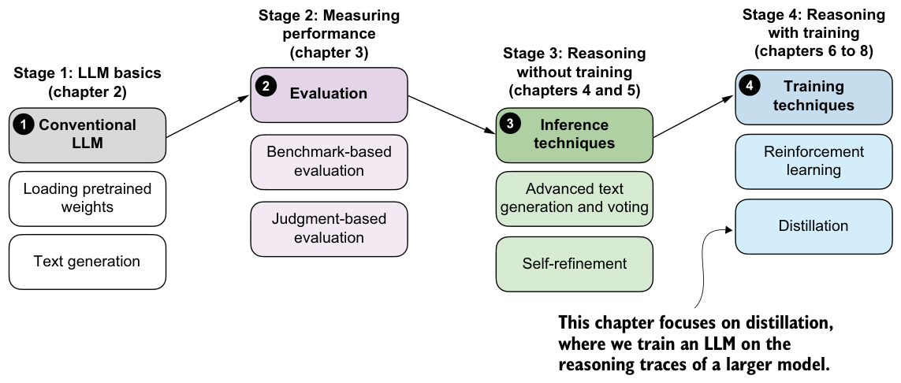

7.6.3More GRPO modifications, tips, and tricks
In chapter 6, we implemented a version of GRPO without the KL loss term, with clipped policy ratios, and with a format reward for introductory purposes. Then we added these concepts to build a solid foundation for understanding the original
GRPO algorithm, which underlies most modern reasoning training frameworks. Figure 7.21 outlines this next step, where we’ll discuss additional modifications, tips, and tricks.
Figure 7.21 The last section in this chapter outlines additional GRPO modifications that have emerged | recently.
As far as RLVR with GRPO goes, we learned that there are many knobs to tune. Besides changing the basic settings, such as the learning rate, maximum response length, and prompt format, there is a nearly infinite number of settings and modifications to try.
Exploring a single modification, or a small handful of modifications, thoroughly could become a month- or year-long research project for a small research team.
Algorithms are expected to keep changing and evolving. It is important, though, to understand the fundamentals and the general ideas behind them so you can understand and appreciate these improvements.
In the months following the success of DeepSeek-R1, many researchers proposed changes to the original GRPO algorithm that improved both training stability and final performance. The following selection of suggested improvements comes from DAPO,
Dr. GRPO, DeepSeek-V3.2, and others (you can find a full list of references and links in appendix A):
1 Filter out zero-gradient examples (DAPO): Skip prompts where all sampled responses receive the same reward, because these groups produce no useful advantage signal.
2 Use active sampling (DAPO): Oversample or prioritize prompts that produce a mix of correct and incorrect responses, because these provide a stronger learning signal.
3 Switch from sequence-level to token-level loss (DAPO): Compute the loss over individual tokens rather than whole responses, which can reduce length-related bias.
4 Omit the KL loss term (DAPO and Dr. GRPO): Remove the KL penalty when it hurts stability or performance, especially in math reasoning settings.
5 Use a larger clipping range (DAPO): Relax the clipping threshold so the policy can make larger updates when the reward signal is reliable.
6 Truncate importance-sampling ratios (verl): Cap very large importance weights so a few off-policy samples cannot dominate the update.
7 Remove standard-deviation normalization of advantages (Dr. GRPO): Normalize rewards relative to the group mean but avoid dividing by the reward standard deviation.
8 Tune the KL strength by domain (DeepSeek-V3.2): Use different KL coefficients for different data types, including zero KL for math tasks.
9 Reweight the KL term with importance sampling (DeepSeek-V3.2): Correct the KL estimate when rollouts are sampled from an older policy rather than the current policy.
10 Mask unsuitable off-policy sequences (DeepSeek-V3.2): Exclude rollout sequences that are too unlikely under the current policy.
11 Preserve the sampling mask for top-p or top-k sampling (DeepSeek-V3.2): Compute probabilities only over the token set that was actually available during sampling.
12 Keep the original GRPO advantage normalization (DeepSeek-V3.2): Retain the standard group-based advantage normalization when it works well empirically.
13 Normalize each reward component before aggregation (GDPO): Normalize different reward types separately before combining them into a total reward.
14 Apply sequence-level importance sampling and clipping (GSPO): Correct and clip updates at the whole-sequence level instead of only at the token level.
15 Clip importance-sampling weights rather than token updates (CISPO): Limit the importance weights directly, so off-policy corrections remain stable.
Detailed explanations, code examples, and training run results for those modifications are outside the scope of this chapter. If you’re interested, you can find them in the book’s supplementary materials at https://mng.bz/nZVv.
Summary
- Training reasoning models with GRPO can become unstable over longer runs, even when the implementation is correct and rewards initially improve.
- Interpreting GRPO training requires tracking multiple metrics jointly (average rewards, response length, evaluation accuracy, advantage statistics, and entropy): Basic metrics such as loss mainly serve as sanity checks in GRPO and should
not be overinterpreted in isolation.
- Advantage statistics provide useful diagnostics: the mean should remain near zero by design, while the standard deviation reflects the strength and stability of the learning signal.
- Entropy measures how uncertain the model is during generation. Very low entropy can signal collapse, and very large entropy can indicate unstable updates and randomness in the model responses.
- Clipped policy ratios limit how much the policy can change between updates and can substantially improve training stability over longer runs.
- Adding a KL divergence term constrains long-term drift from a reference model but can destabilize training when the rewards collapse.
- For math reasoning tasks, several recent systems report better stability and performance by omitting the KL term altogether.
- Auxiliary format rewards can improve the response structure, such as encouraging the use of
<think>and</think>tokens.
- Beyond the original GRPO algorithm, many recent extensions modify advantage normalization, importance sampling, clipping strategies, and KL handling to improve stability and efficiency.
Distilling reasoning models for efficient reasoning
This chapter covers
- Hard and soft distillation for reasoning models
- Creating and preparing a teacher-generated reasoning dataset
- Training and evaluating a distilled student model using cross-entropy loss
Reasoning performance can be improved not only through inference-time scaling and reinforcement learning, but also through distillation. In distillation, a smaller student model is trained on the reasoning traces and answers generated by a larger teacher model. As shown in the overview in figure 8.1, this chapter focuses on this training-time technique.
We’ll look at model distillation in general before discussing the individual steps in the process.
